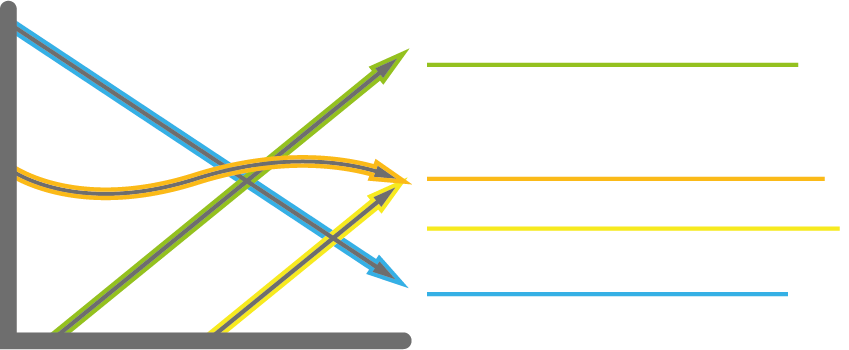
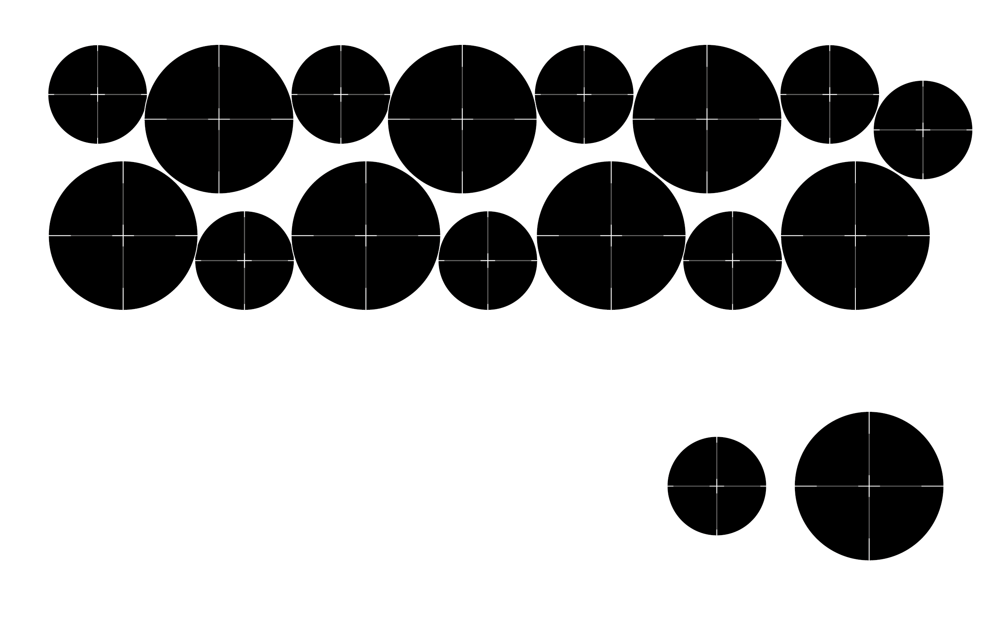

As with everything we do, agriculture continues on what our ancestors did before us, whether we like it our not. Still I think its too easy to say that the post-WW2 generations before us left us in the mess we are in now. Because in a way that mess is still unfolding and my generation and me therefore are still responsible for what is next. When I was born there were almost two billion people less on earth. That means a global population increase of over 30% in less than 23 years.
The result (or cause..) of this increase in demand of food was monocropping. After the second worldwar we were able to produce fertilizer out of nitrates. Which was succesful, but not sustainable. Aside from being polluting it has been responsible for massively decreasing biodiversity. In the United States and most of Europe the farms grew, their yield grew but the amount of farmers shrinked. Nowadays the average age of farmers is rising and a lot local indigenous knowledge is getting lost. Humans have been doing primary activities for over 8000 years. Just in the last few decades we invented more secondary and tertiary jobs and in the last few years those evolved into quartenary activities, examples being consultancy, researching and digital trading.

So where is the baseline now?
At implementing.. With open-source knowledge more microfarms can be started and more people can learn about its benefits anywhere and find ways to adopt them. ROMI is a project that aims to scale up organic microfarms. I learned that ROMI's largest struggle is its intelligence as in the ability it requires for recognizing and distinguising plants and weeds. In that sense its successor will have to be smarter and ideally have legs instead of wheels so that intercropping can be more accessible.
